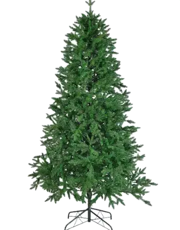

✦ Литая хвоя · зелёная
Литая искусственная ель «Кунгурская»
В наличии в шоуруме в Омске
Пропорциональная литая ель средней пушистости по доступной цене.
Высота, см
5 500 ₽
- — Собранной стоит в шоуруме: ул. Маршала Жукова, 70а/1, ежедневно 11:00–20:00
- — Пришлём видео этой ёлки перед покупкой
- — Бесплатная доставка по Омску, отправка по России
Высоты и цены
Нажмите на строку, чтобы выбрать высоту. Под потолок берите ёлку на 20–30 см ниже: место нужно для подставки и звезды.
| Высота | Куда подойдёт | Цена |
|---|---|---|
| 120 см | потолок от 1,5 м | 5 500 ₽ |
| 150 см | потолок от 1,8 м | 6 900 ₽ |
| 180 см | потолок от 2,1 м | 10 900 ₽ |
| 210 см | потолок от 2,4 м | 14 600 ₽ |
| 230 см | потолок от 2,6 м | 18 100 ₽ |
Об этой ёлке
Пропорциональная литая ель средней пушистости по доступной цене. Хвоя литая: каждая веточка отлита по форме живой ели, поэтому ёлка выглядит естественно и годами держит форму.
Модель есть в 5 высотах: от 120 до 230 см. Цена — от 5 500 ₽ до 18 100 ₽, зависит от высоты.
Купить ель «Кунгурская» в Омске можно в нашем шоуруме на ул. Маршала Жукова, 70а/1: модель стоит собранной, её можно потрогать и сравнить высоты. По Омску доставляем бесплатно, в другие города отправляем СДЭК, Boxberry и Почтой России.
Подробнее о модели «Кунгурская»
Где смотрится и кому подойдёт
Кунгурская — пропорциональная ель средней пушистости по доступной цене. Это сбалансированный вариант между стройными и пышными моделями: не занимает полкомнаты, но и не выглядит «худой».
Какую высоту выбрать
Модель «Кунгурская» есть в 5 высотах: от 120 см до 230 см. Высота указана вместе с подставкой, а над макушкой стоит оставить 20–30 см под звезду или шпиль.
Как выбрать: 120 см — на стол, комод, подоконник или в детскую; 150 см и 180 см — для небольшой комнаты или если ёлка будет стоять на тумбе; 210 см и 230 см — для квартиры с потолками 2,5–2,7 м: ёлка доходит почти до потолка и смотрится по-настоящему большой.
Цены
Цена зависит только от высоты: от 5 500 ₽ за 120 см до 18 100 ₽ за 230 см. Для квартиры с потолком 2,5 м чаще всего берут 210 см — 14 600 ₽. К любой высоте — гирлянда в подарок, доставка по Омску бесплатная.
Для сравнения — цены за 180 см у похожих моделей:
| Кунгурская | 10 900 ₽ |
| Пермская | 12 400 ₽ |
| Тюменская | 13 700 ₽ |
| Кремлёвская | 11 300 ₽ |
Как украсить
К зелёной хвое подходят игрушки любых цветов. Беспроигрышные сочетания — красный с золотом для классики, белый с серебром для зимнего настроения, натуральные материалы (дерево, шишки, лён) для эко-стиля. Начинайте с гирлянды, затем вешайте крупные шары ближе к стволу и мелкие на кончики веток. Больше идей — в статье «Как украсить искусственную ёлку».
Сборка и хранение
Модель «Кунгурская» собирается из нескольких частей за 10–20 минут: ствол соединяется секциями, после чего ветки нужно расправить — начните с нижних ярусов. Хранить ёлку лучше в родной коробке в сухом месте, подробнее — в статье «Как собрать и хранить искусственную ёлку».
Вопросы о модели
Сколько стоит модель «Кунгурская» 180 см?
10 900 ₽. Цены за все высоты — в таблице выше.
Какая максимальная высота у модели «Кунгурская»?
230 см за 18 100 ₽. Для неё нужен потолок от 2,6 м.
Можно посмотреть модель «Кунгурская» вживую?
Да, модель стоит собранной в шоуруме на Казачьем рынке: ул. Маршала Жукова, 70а/1, ежедневно с 11:00 до 20:00.
Есть ли доставка?
По Омску доставляем бесплатно, в другие города отправляем СДЭК, Boxberry или Почтой России.
Эта ёлка в подборках
Похожие ёлки
Весь каталог →Сомневаетесь с моделью или высотой?
Пройдите подбор из 4 вопросов — покажем подходящие ёлки с ценами.